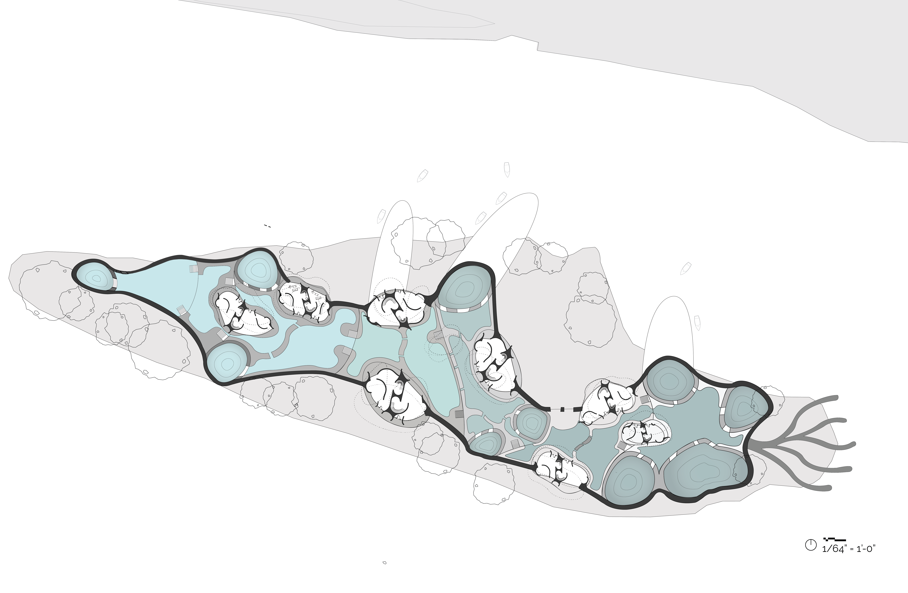
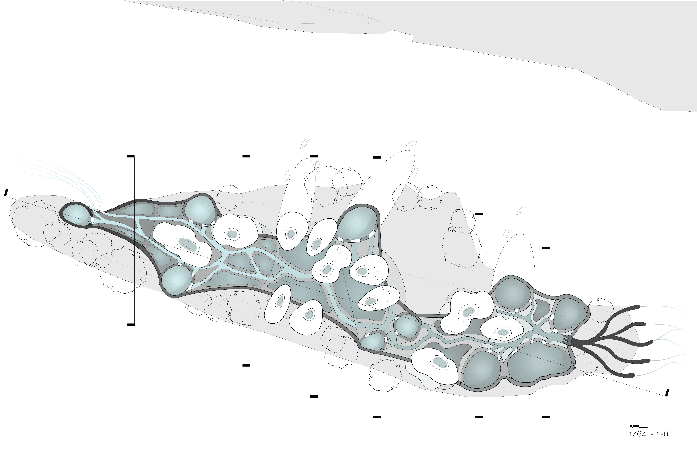
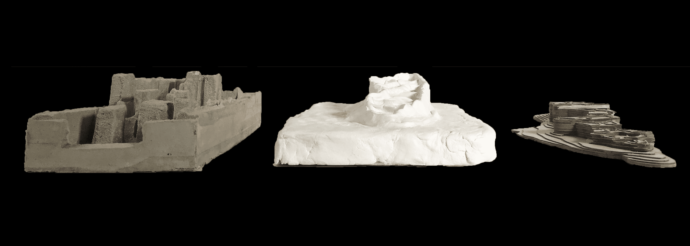
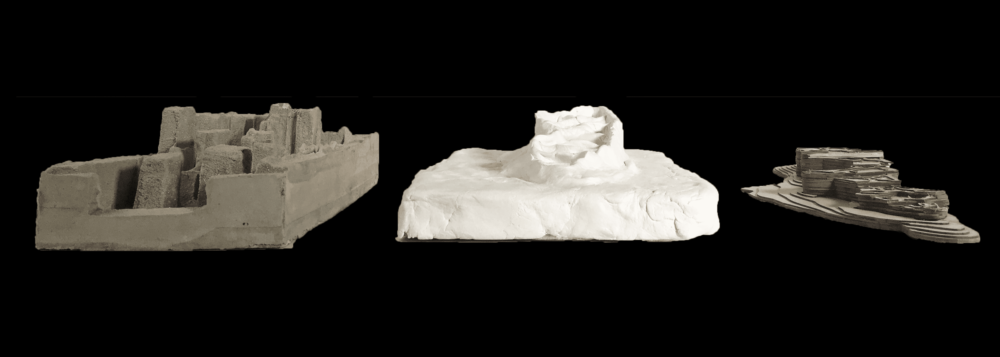

Year: Fall 2018
Project: Design Proposal
Studio: Environment, Form Feedback: Water Communities
Professors: Matthew Huber, Dana Cupkova
Overview
The project site was on Six Mile Island in Sharpsburg, PA. It is a slowly moving island that is located in the middle of Allegheny River and experiences frequent flooding on the site. The goal of this project was to create an eco-machine that would help sustain the environment on and around the island as well as creating co-housing for people to inhabit the eco-machine and potentially be involved with helping the environment around them.
Biofiltration System
A section of the project focused on researching and understanding a precedent system that engages with the environment as a source of processing energy. The goal was to develop an understanding and focused knowledge of this specific system's behavior and logic to get a clear understanding of how it could be incorporated into a site. The precedent that I chose was biofilters. Biofilters aim to clean the water through various methods, like using plants to help filter the pollutants in the water. I designed a structure that was a large biofilter that would take water from the Allegheny River and clean it, then give back cleaner water. Another system that I researched were greenwalls, which correlate with biofilters to help clean the water by cycling through the plants and coming back into the pool of water cleaner. This biofilter aims to use narrow streams, waterfalls, and greenwalls to treat water.
Climatic Conditions
A series of wind studies on the island that helped morph the shape of the architecture. Historically, the island has grown smaller over several decades and this architecture aims to still stay standing even as the island begins to fade away, as illustrated in the right drawing.


Site Plan
The top level of the system is a series of streams and openings that help guide the water through the structure and allow water to fall through the top and into the bottom layer of the system. The pump at the beginning tries to mimic the appearance of water flow streams and helps bring water into the system. The bottom level of the stream consists of a series of large pools that are surrounded by walkways to allow for residents to get into their homes.
Plans Stepping Sections
Each building holds multiple housing units depending on the shape of it. The core of the building consists of stairs that help inform that orientation of each floor; each floor is rotated a specific way (the first floor is rotated to follow waterflow, the second floor is rotated to try and get as much sunlight as possible, and the third floor is shaped by the wind). The walls of the unit help inform the circulation flow that someone would walk while going through the house. The series of sections help show the main concept of the design, which are the different elevations/steps that occur throughout the system to help clean the water. This occurs both in the system and also through the housing units in section.
The Eco-Machine
The ecomachine has several components to it: the water entry point, the waterfall pools, the narrow streams, the greenwall, the green roof, the roof rainwater collection system, the steps, and the water exit point.


 
